장비 강화
단계 성장에 재료 선택과 위험 보호를 더한 장비 성장 시스템 — 확률을 높이는 선택과 손실을 막는 선택을 분리했습니다
확률을 확인한 뒤, 도전하도록
기존 성장 시스템인 인챈트와 함께 사용할 수 있는 단계형 성장을 제공하고, 강화 확률과 실패 위험을 확인한 뒤 도전하도록 설계했습니다.
실행 조건
대상 장비 / 재료 / 재화 — 강화 시도 가능 여부를 판단하는 기본 조건
확률 보정
보조재 — 성공 확률을 높이고, 다른 확률 요소는 낮추는 선택형 보조 수단
리스크 보호
하락 방지권 / 파괴 방지권 — 하락·파괴 리스크에 대비하는 선택형 보호 수단
결과 반영
성공 / 유지 / 하락 / 파괴 — 판정 결과에 따라 장비 상태를 갱신
보조재는 판정 전 성공 확률을 보정하고, 방지권은 사용 설정에 따라 해당 위험 결과를 유지로 변경합니다.
선택권은 열고, 합산에는 상한을
보유한 일반·특수 보조재를 조합하되, 재료별 등록 개수와 종류별 확률 상한을 함께 적용했습니다.
| 단계 | 규칙 |
|---|---|
| 재료별 설정 | 일반 보조재 A/B/C의 1개당 보정값과 최대 등록 개수를 각각 설정 |
| 종류별 합산 | 일반 재료끼리 보정값을 합산. 일반·특수의 추가 보정은 각각 기본 성공 확률을 넘지 않음 |
| 적용 상한 | 재료 조합이 달라도 종류별 합산 상한을 적용하고, 최종 성공 확률은 전역 최대값을 넘지 않음 |
최근 입력한 보조재 우선 반영과 자동 조정
새로 입력한 재료를 우선 반영하고, 상한을 넘으면 등록한 보조재의 내림차순(C 등록 시 B → A, B 등록 시 A)으로 다른 재료를 차감합니다. 차감할 재료가 없으면 등록은 진행하고 초과한 확률은 버립니다. 상한을 맞추려고 유저가 재료 수를 하나하나 다시 맞추는 조작을 줄였습니다.
결과 확률 계산과 방지권 정책
실패 결과는 '실패 확률 안에서의 비중'으로 나눕니다. 비중 0.5는 전체의 50%가 아니라 실패 60% 중 절반입니다.
| 결과 | 실패 확률에 곱하는 비중 | 전체 확률 |
|---|---|---|
| 성공 | 기본 3000 + 일반 700 + 특수 300 | 40% |
| 유지 | RetainWeight = 0.5 | 30% |
| 하락 | DropWeight = 0.3 | 18% |
| 파괴 | 1 − 0.5 − 0.3 = 0.2 | 12% |
- 하락 방지권 — 하락 확률이 있고 파괴 확률이 없는 구간에서 사용. 하락 결과를 유지로 변경
- 파괴 방지권 — 파괴 위험 +
DestroyPreventItemUsable = True일 때 사용. 파괴 결과를 유지로 변경하며, 하락은 보호하지 않음 - 공존 규칙 — 하락·파괴 위험이 함께 있으면 파괴 방지권만 사용. 두 방지권은 동시에 선택할 수 없음
- 소모 · 표시 — 사용을 켠 상태로 강화하면 결과와 관계없이 1개 소모. 보호하는 결과의 확률만 유지 확률에 합산해 표시
확률을 높이는 선택과 손실을 막는 선택을 분리하고, 소모 비용과 보호 범위를 실행 전에 알립니다. RetainWeight + DropWeight ≤ 1을 넘으면 강화가 진행되지 않도록 데이터 검증을 요청했습니다.
FGT · CBT를 거치며 바뀐 규칙
한 번에 완성된 규칙이 아닙니다. 테스트 피드백과 지표를 보고 세 차례에 걸쳐 구조를 고쳤습니다.
하락 방지권 — 성장 전에 선택하도록
사용 여부를 성장 이전에 토글로 선택하도록 바꾸고, 켠 상태에서는 결과와 관계없이 1개를 소모한다는 문구를 붉은 리치 텍스트로 강조했습니다. 장비 티어·목표 단계에 따라 사용 가능 여부(DropPreventItemUsable)를 데이터로 정하고, 확률 표기도 하락 확률 {0}% (-{1}%) 형식으로 방지권 사용 여부에 따라 달라지게 했습니다.
10초 가까운 연출의 피로 — 스킵 연출 추가
자주 접하는 시스템인데 연출이 길어 성장 자체가 피로해지는 문제가 있었습니다. 기존 연출을 온전히 보고 싶은 유저를 위해 원래 연출은 그대로 두고, 끝 부분만 출력되는 스킵 전용 이펙트·BP·UI 애니메이션 3종을 별도로 만들어 연출 도중 화면을 누르면 즉시 전환되게 했습니다. 스킵 가능 시간 범위는 GlobalFactor로 관리합니다. 이 밖에 확성기 개선, 단계별 무기 이펙트, 보조재 등록 개수 클라이언트 저장을 함께 반영했습니다.
파괴 결과 추가 — 고강화 장비의 과잉 보존
패널티가 하락뿐이라 일정 수치 이상에서는 시도가 누적되며 고강화 장비가 과도하게 쌓였고, 이를 소거할 수단도 부족해 아이템의 희소성이 유지되기 어려웠습니다. 결과를 성공·유지·하락 3단계 → 성공·유지·하락·파괴 4단계로 바꾸고, RetainWeight 하나로 나누던 실패를 DropWeight를 더해 세 갈래로 구분했습니다. 남은 비중이 파괴 확률이 됩니다.
정책 · 확률 · 스탯을 테이블 단위로 분리
강화 정책 변경, 확률 조정, 스탯 조정의 영향 범위를 분리해 각 요소를 독립적으로 관리할 수 있도록 설계했습니다.
전역 정책값
최대 성공 확률, 하락·파괴 방지권 아이템 키, 성공/파괴 확성기 출력 조건, 방지권 소진 시 연결할 ShopID, 연출 전용 Prop 키, 단계별 아이콘 하이라이트·무기 이펙트 출력 조건
장비 · 구간별 확률
ItemKey · EquipType · Grade · Tier · 목표 단계 구간별로 재화·재료·일반/특수 보조재, SuccessRate · RetainWeight · DropWeight, 방지권 사용 가능 여부
단계별 스탯
강화 단계에 따라 장비 Base 스탯에 영향을 주는 QualityStat과, 추가로 옵션을 부여하는 ReinforceStat을 관리
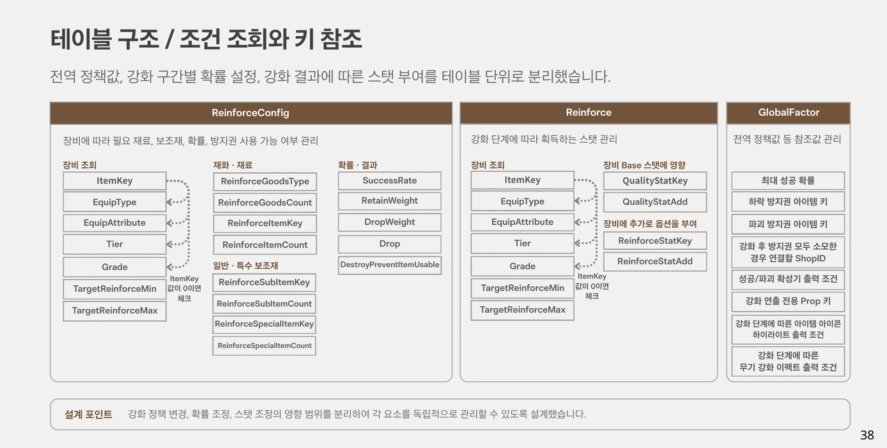
강화 전엔 선택과 비용을, 강화 후엔 결과를
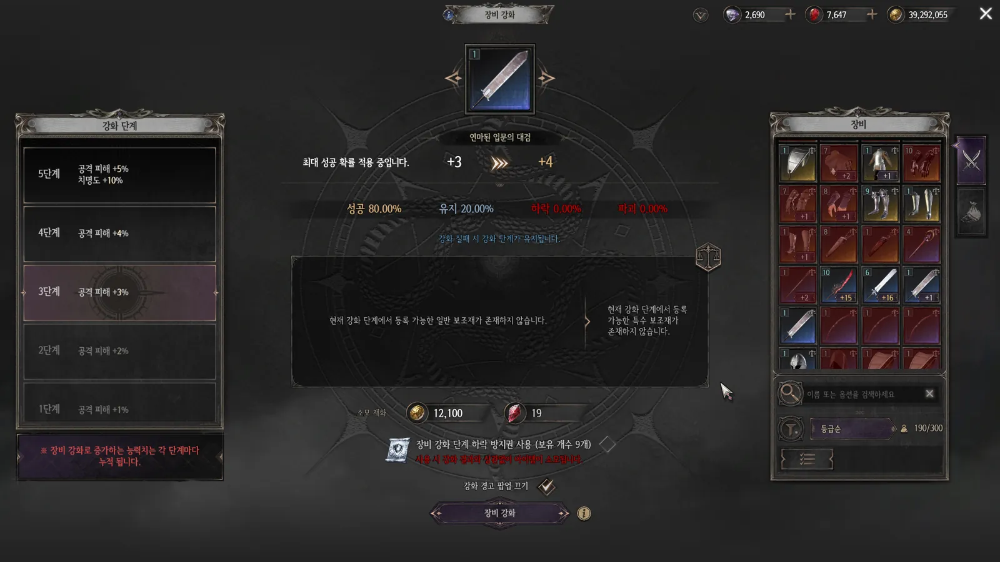
- PC — 단계 패널과 인벤토리를 양쪽에 두고 중앙에서 재료와 실행 정보를 비교
- Mobile — 중앙 대상 / 좌측 보조재 / 우측 인벤토리
- ① 대상과 강화 단계 — 현재 단계와 목표 단계를 가까이 표시
- ② 확률 ③ 보조재 — 재료 입력 후 결과별 확률을 갱신해 조합에 따른 변화를 확인
- ④ 보호·비용·실행 — 방지권 종류·보유량과 소모 재화를 실행 버튼 주변에 배치
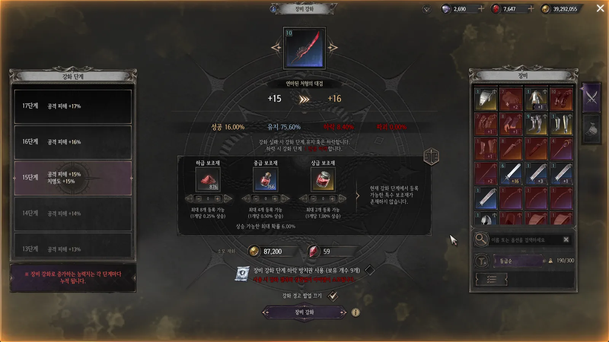
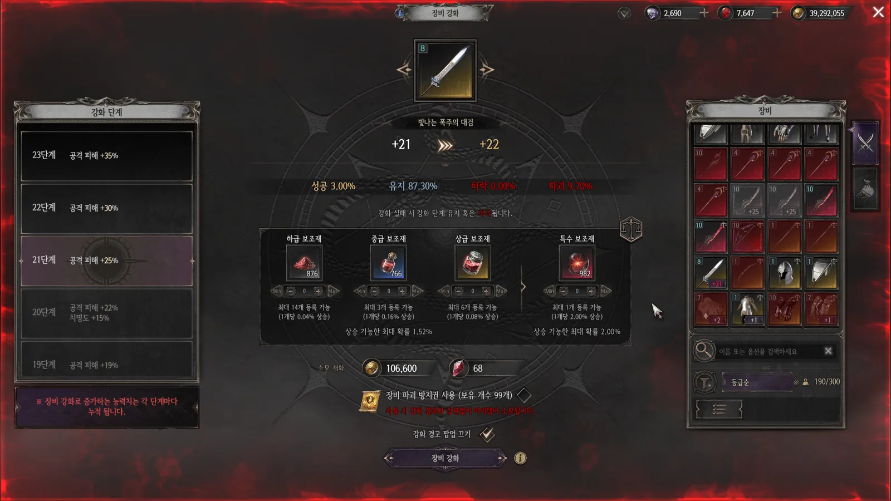
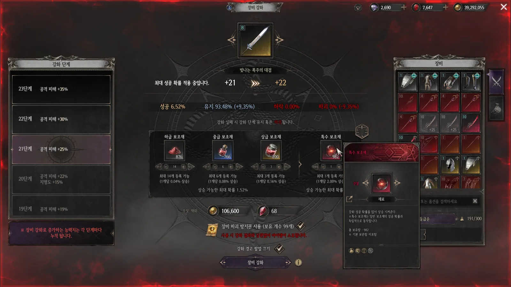
결과 공개 순서
서버 결과값 → GlobalFactor의 연출 PropKey 확인 → Prop 테이블에서 BP 매핑 → ImagePreviewCapture 이미지 구조에 해당 Prop BP를 표시합니다.
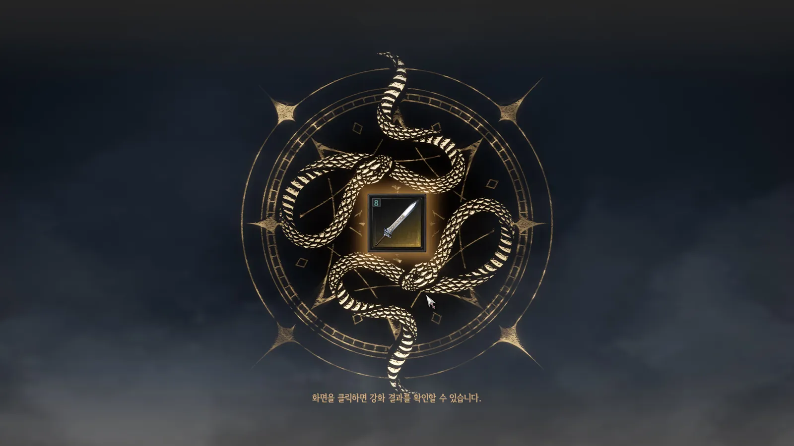
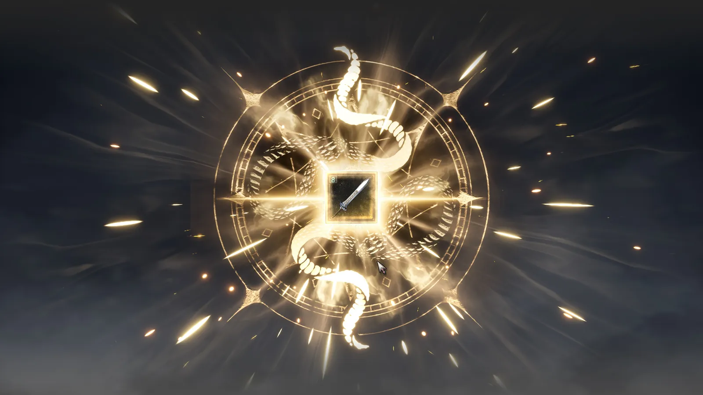
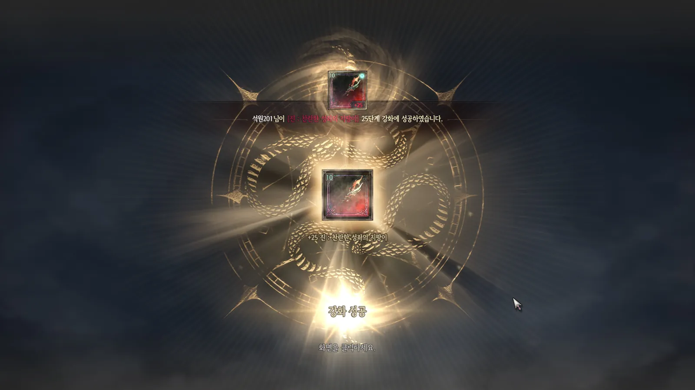
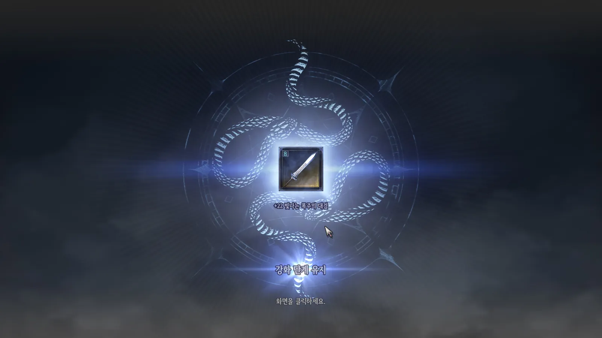
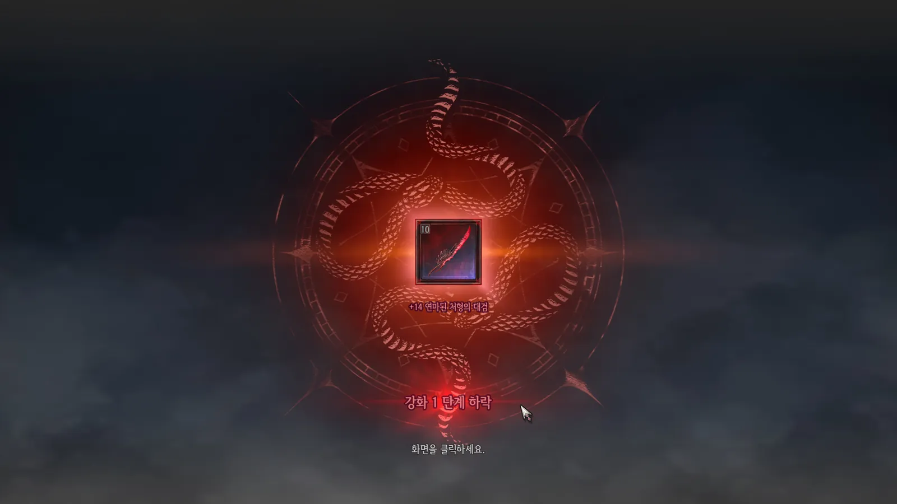
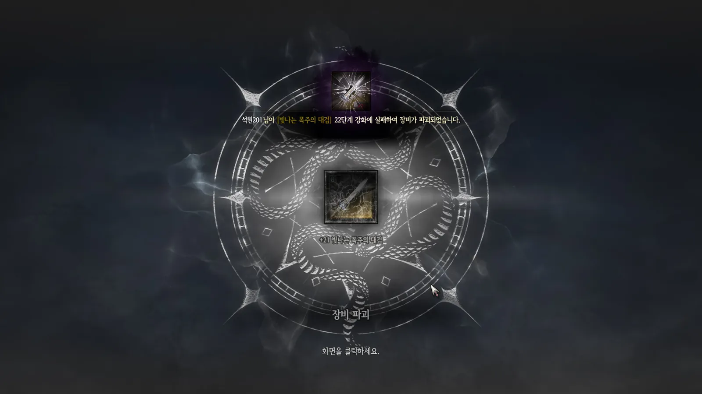
장착한 무기에서도 보이는 성장
강화 결과 화면을 벗어난 뒤에도 성장 상태가 무기 외형으로 드러나도록, 단계 조건과 출력 구조를 설계했습니다.
초기 상태
무기 BP의 강화 파티클은 모두 비표시
단계 조건 확인
GlobalFactor에서 정의한 강화 단계 구간과 비교
해당 이펙트 출력
조건에 맞는 파티클만 Visible — 예) 7단계 이펙트가 21강부터라면 WP_RF_07 표시
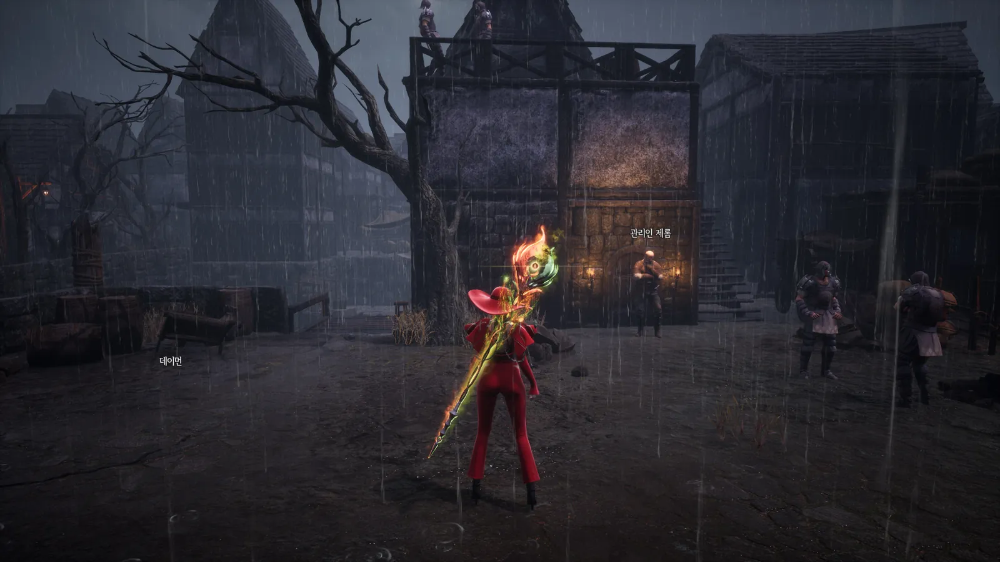
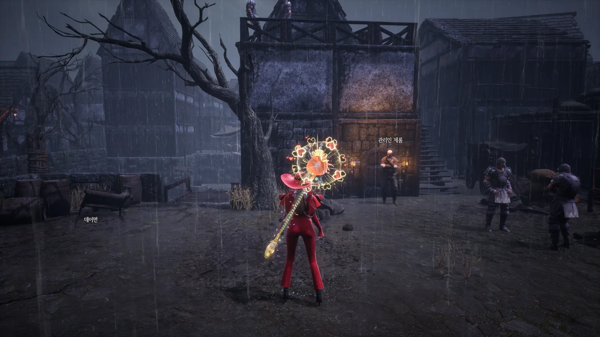
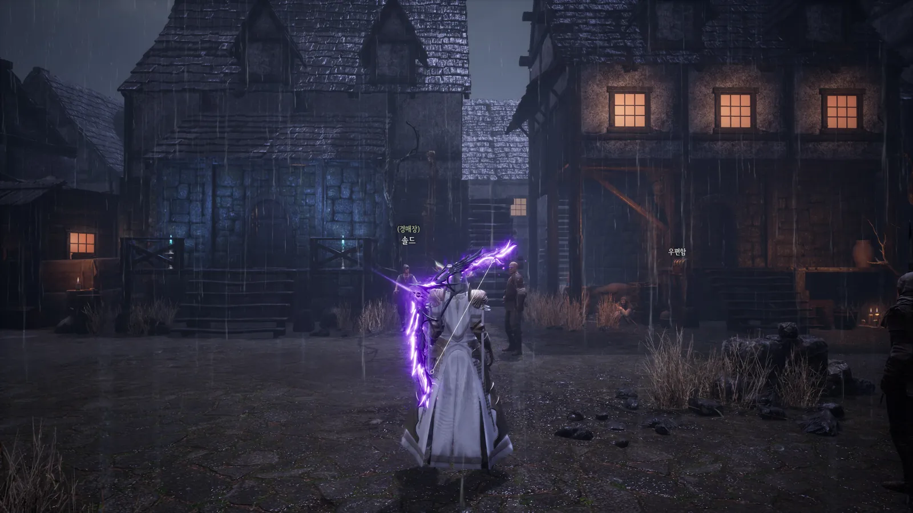
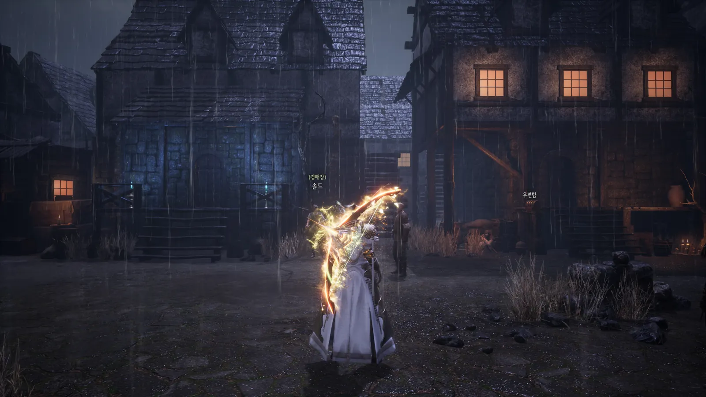
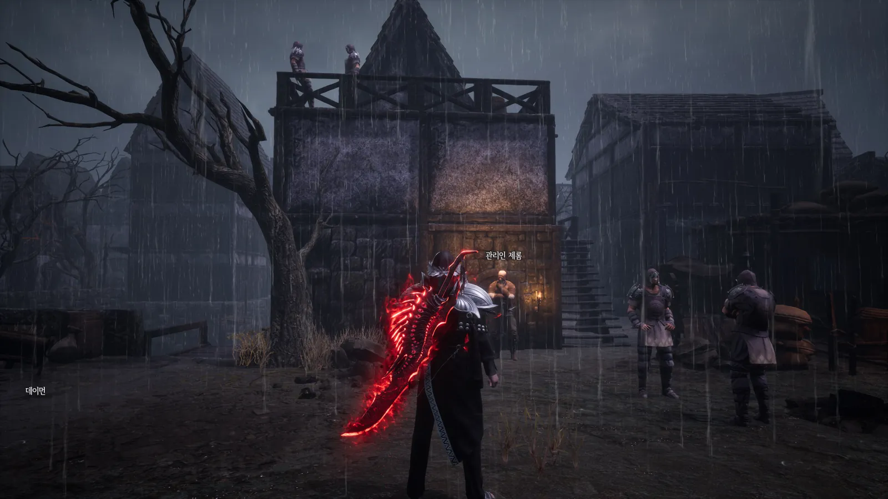
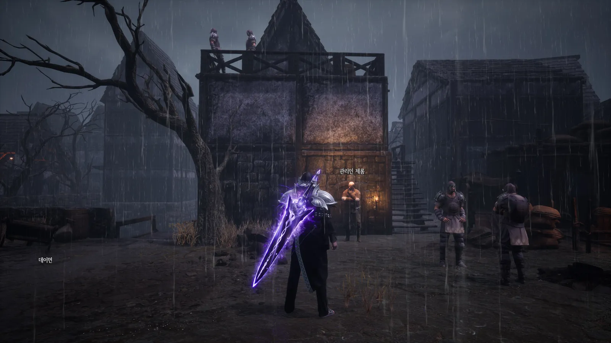
포트폴리오 원본 슬라이드
PDF 포트폴리오 33~41쪽 전체입니다. 클릭하면 전체 화면으로 보고 ← → 키로 넘길 수 있습니다.